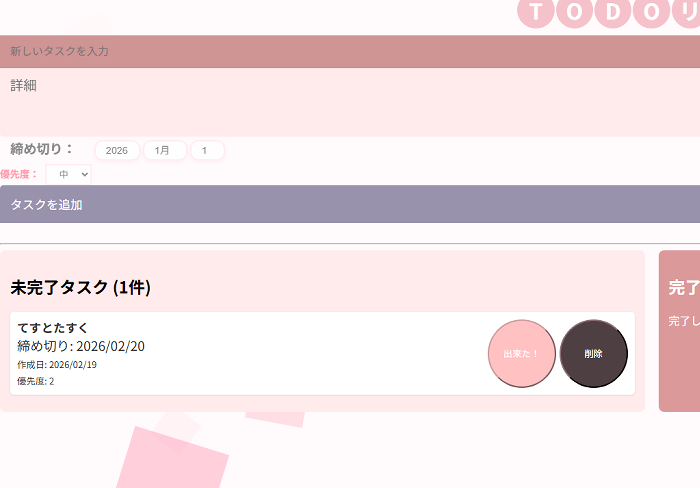
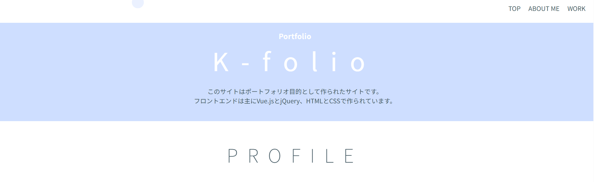

TODOリスト
使用言語：HTML/CSS/Django/Vue.js
シンプルなTODOLISTです。優先度や締め切りも設定できます。
画像をクリックすると動画が再生されます
このサイトはポートフォリオ目的として作られたサイトです。
フロントエンドは主にVue.jsとjQuery、HTMLとCSSで作られています。
かんたけ かおり
スキルレベルの指標
| フロントエンド | レベル | 補足 |
|---|---|---|
| HTML | ★★★★★ | 10年以上独学で勉強してきたので、基礎理解は出来ています。 |
| CSS | ★★★★★ | HTMLと共に10年以上独学で勉強してきたので、基礎理解は出来ています。 |
| JavaScript (JS) | ★★★★☆ | HTMLやCSSを学んでいくうちに、動的なサイトを作るために勉強していたら身についていきました。 |
| jQuery | ★★★☆☆ | 上記ほどではないですが、Vueの存在を知る前まではよく使っていました。 |
| Vue.js | ★★★☆☆ | Kaienの訓練で学んだフレームワーク。Udemyやこのサイトを通して基礎の理解を深めたと思います。 |
| バックエンド | レベル | 補足 |
|---|---|---|
| Python | ★★★★☆ | 訓練で最も勉強した言語です。勉強を始めたばかりですが、動かしていくうちに基礎は出来るようになりました。 |
| Django | ★★★★☆ | 成果物を作る際にもっとも使った言語です。基礎理解は出来ています。 |
| PHP | ★★★☆☆ | 以前の業務、Wordpressの管理実務で使用した言語です。 |
| Node.js | ★☆☆☆☆ | JavaScriptそのものは以前から独学で学び使用していましたが、バックエンド開発でも今後活用していきたいです。 |
ABOUT ME
フロントエンドとバックエンド、両方の分野を幅広く扱うエンジニアを目指しています。ユーモアのある遊びのあるサイトでも、見ただけでパッとわかるようなシンプルなサイトでも、とにかく作ることが好きです。面白いこと、新しいことに興味があります。エンジニアという世界の中で、皆様と一緒にもっと新しい発見が出来たら嬉しく思います。
私は以下の理由から、主にチャットツールを用いたコミュニケーションを選択しています。
主治医のサポートのもと適切に管理しており、現在は業務に支障ありません。全体的に快復傾向にあります。

TODOリスト
使用言語：HTML/CSS/Django/Vue.js
シンプルなTODOLISTです。優先度や締め切りも設定できます。
画像をクリックすると動画が再生されます

K-folio
このサイトそのものです。
ポートフォリオとして「私」が伝わるようにシンプルな構成をベースに、小さな遊び心を意識しました。